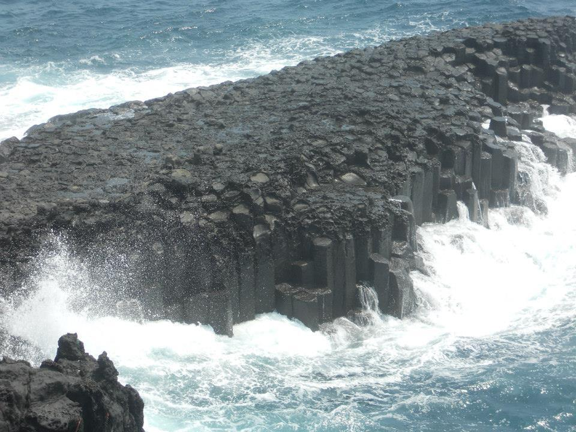

The Jungman Lava Columns are located near the Mangnan Lava Tubes. They are formed by volcanic lava being cooled by the ocean water, naturally taking the striking column shape. They also have "Black Sand Beaches" nearby, which are beachfronts that have black sand, instead of the usual tan.
Here is what to do in Lucaya. Count Basie Square, Leo's Art Gallery, and Neptune's Cocktail Lounge are just to name a few. O, you can't forget Pelican Bay. I still haven't figured out how you can be on what seems like the top of a mountain and on the beach at the same time. Everything here seems perfect. You can't go wrong and the Marina is just at the bottom of the drive.

A historical Italian estate first built in 1916 as a private winter retreat for American Businessman James Deering, this beautiful villa pays tribute to the Italian Renaissance era. On this site tourists can visit a Museum that still has its earlier furnishings and artwork intact, as well as its beautiful formal gardens. Many tourists say this is one of the best bay views in Miami! Open to the public, and free of charge! Doesn’t get any better than that. Wynwood Walls was first established and opened in 2009 by well-known art visionary Tony Goldman. This outdoor museum features more than 40 street art murals from some of the leading street artists around the world. If you’re an up-and-coming artist looking for inspiration, this place is a must see!

Nassau is known for quite a few attractions, including Cable Beach, Blue Lagoon Island, Queen's Staircase, Clifton Heritage National Park, and my favorite, the Aquaventure water park. OMG, Beautiful water, nice people, great culture. I am coming back tomorrow, lol.